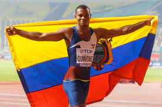

El atletismo ecuatoriano ha experimentado un desarrollo notable a lo largo de los años, destacando por el esfuerzo y dedicación de atletas que han llevado el nombre del país a competiciones nacionales e internacionales. Desde las primeras décadas del siglo XX, se observa un crecimiento constante en la participación y los logros de los atletas ecuatorianos en disciplinas como carreras, saltos y lanzamientos. La construcción de infraestructuras deportivas, el establecimiento de programas de entrenamiento y la representación en eventos internacionales han contribuido al fortalecimiento y reconocimiento del atletismo como una parte integral del panorama deportivo de Ecuador.
|  |
Los éxitos de atletas ecuatorianos, tanto en las pistas nacionales como en competiciones globales, han inspirado a generaciones posteriores a perseguir sus sueños en el atletismo. A través de eventos como los Juegos Panamericanos y los Juegos Olímpicos, los atletas ecuatorianos han demostrado su habilidad y determinación, llevando consigo el orgullo de representar a su país en la arena internacional y contribuyendo al desarrollo continuo de la historia atlética de Ecuador.
Aunque los inicios del atletismo ecuatoriano pueden remontarse a las primeras décadas del siglo XX, su desarrollo inicial estuvo marcado por la influencia de eventos y figuras internacionales. La introducción de competiciones de atletismo en el país proporcionó una plataforma para que los atletas locales mostraran sus habilidades en disciplinas como carreras, saltos y lanzamientos. A medida que el interés por el atletismo creció, se observó un aumento en la participación de atletas ecuatorianos en eventos nacionales y regionales, construyendo así las bases de una tradición atlética en formación.
El establecimiento de asociaciones y federaciones deportivas en el país contribuyó al impulso del atletismo ecuatoriano. La formalización de estructuras organizativas permitió una planificación más eficaz de eventos, programas de entrenamiento y la participación en competiciones internacionales. A lo largo de estas primeras décadas, atletas pioneros comenzaron a destacar, abriendo camino para generaciones futuras y consolidando al atletismo como una disciplina en crecimiento dentro del panorama deportivo ecuatoriano.
Las instalaciones deportivas también jugaron un papel clave en el desarrollo del atletismo. La construcción de pistas y campos de entrenamiento proporcionó a los atletas lugares adecuados para perfeccionar sus habilidades y competir a nivel nacional. Este desarrollo de infraestructuras deportivas contribuyó significativamente al crecimiento y a la profesionalización gradual del atletismo en Ecuador. La presencia de instalaciones modernas y bien equipadas se convirtió en un indicador tangible del compromiso del país con el desarrollo continuo del atletismo.
La representación del atletismo ecuatoriano en eventos internacionales ha sido un aspecto crucial para su reconocimiento global. Atletas ecuatorianos han participado en competiciones como los Juegos Olímpicos, los Juegos Panamericanos y campeonatos mundiales, destacando en disciplinas como maratón, marcha atlética y salto. La presencia en estos eventos no solo ha proporcionado vitrinas para el talento ecuatoriano, sino que también ha contribuido a la proyección internacional del atletismo del país.
El desarrollo de talentos locales y la implementación de programas de formación han sido esenciales para el crecimiento continuo del atletismo en Ecuador. La identificación y el apoyo temprano de jóvenes talentosos, así como la creación de estructuras de entrenamiento y desarrollo, han permitido la formación de atletas de élite. La inversión en instalaciones deportivas y la promoción de competiciones a nivel nacional han contribuido a nutrir un grupo diverso de atletas, generando un flujo constante de talento en diversas disciplinas atléticas.
Los éxitos en disciplinas específicas, como el marchismo, han colocado al atletismo ecuatoriano en el mapa internacional. Atletas como Jefferson Pérez, quien ganó la medalla de oro en la marcha de 20 km en los Juegos Olímpicos de Atlanta 1996, han dejado una huella duradera en la historia del atletismo ecuatoriano. Este tipo de logros individuales no solo destacan el talento de los atletas, sino que también inspiran a generaciones futuras y contribuyen a consolidar la reputación del país en el ámbito atlético mundial.
El atletismo ecuatoriano tiene sus raíces en las primeras décadas del siglo XX, cuando las competiciones atléticas empezaron a tomar forma en el país. En este período, el interés por el atletismo se vio influenciado por eventos internacionales que despertaron la pasión por las carreras, saltos y lanzamientos. A medida que se formalizaban las estructuras deportivas, los atletas ecuatorianos comenzaron a destacar en competiciones nacionales, preparando el terreno para el desarrollo continuo de la disciplina.
El país experimentó un impulso significativo en las décadas posteriores con la participación en eventos internacionales de prestigio. Atletas ecuatorianos se destacaron en los Juegos Olímpicos y los Juegos Panamericanos, llevando el nombre de Ecuador a la escena atlética global. La medalla de oro de Jefferson Pérez en la marcha de 20 km en los Juegos Olímpicos de Atlanta 1996 se convirtió en un hito histórico, no solo por la victoria individual sino también por la proyección internacional del atletismo ecuatoriano.
 |
El desarrollo del atletismo se vio respaldado por programas de formación y la construcción de infraestructuras deportivas. La identificación y apoyo a jóvenes talentos, combinados con instalaciones modernas, contribuyeron al surgimiento de una nueva generación de atletas ecuatorianos. A medida que avanzaba el siglo XXI, el atletismo se consolidó como una disciplina esencial, con éxitos continuos en competiciones regionales e internacionales, demostrando la resiliencia y la evolución constante del deporte en Ecuador.
En resumen, la historia del atletismo ecuatoriano es un relato de crecimiento, logros notables y la construcción de una identidad atlética sólida que ha dejado una marca duradera en la escena deportiva nacional e internacional.